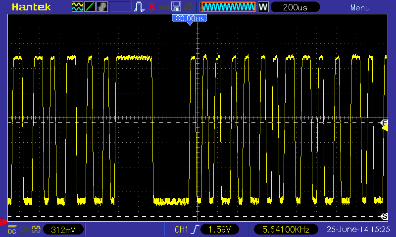
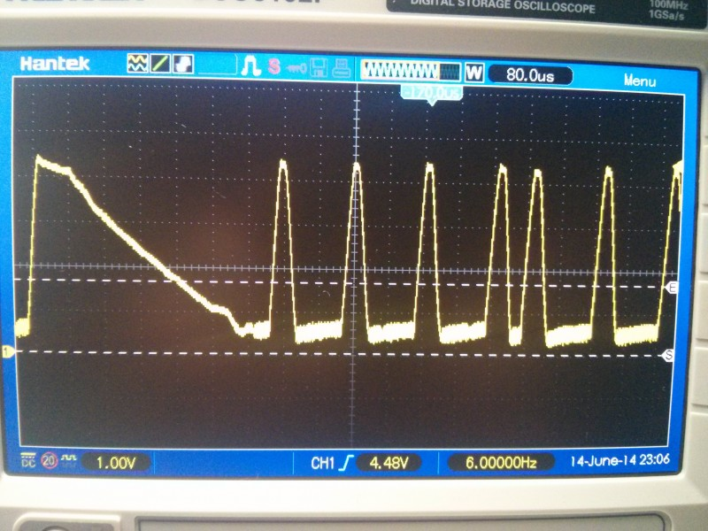
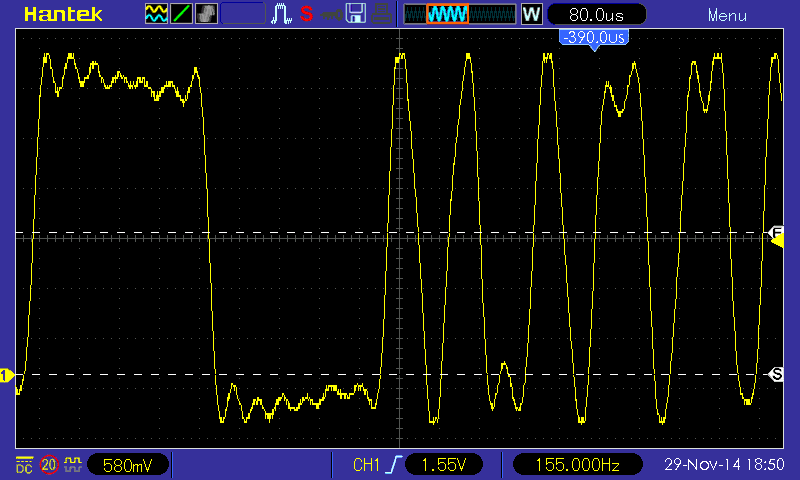
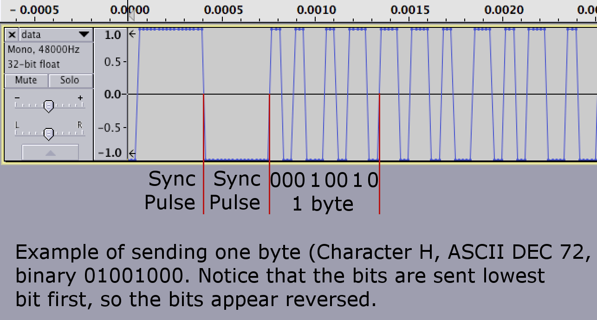
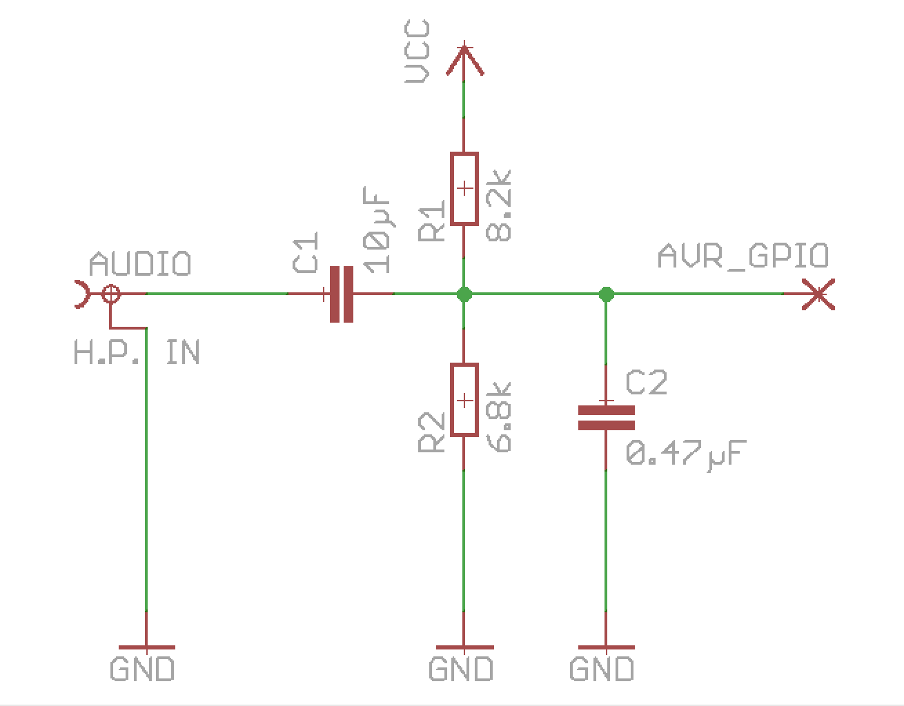
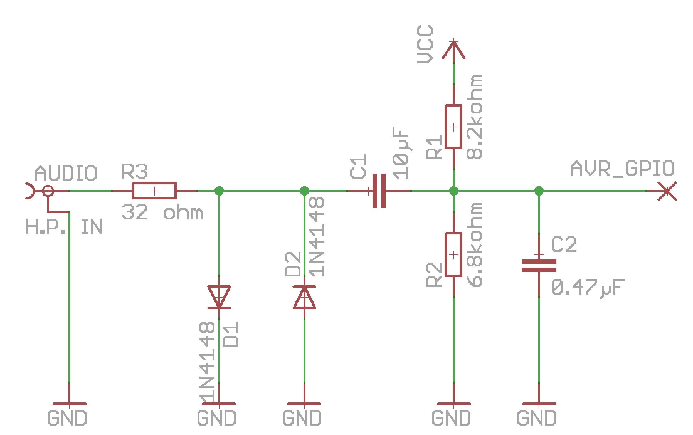
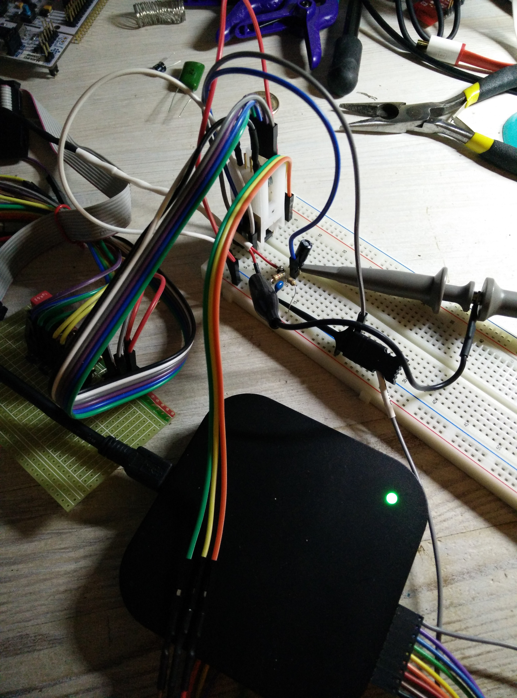
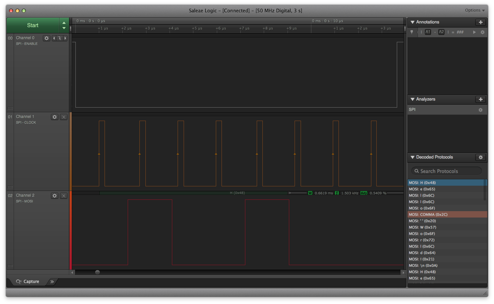

Note: This blog post has been originally published in Rakettitiede Oy’s “Rakettitiede Labs” -blog.

This blog post is about my adventures in implementing a stupidly simple way of transferring data over audio to AVR (and why not other embedded chips too), reaching speeds up to 12kbps with really tiny code and memory footprint, using the internal oscillator of Tiny AVR, with hardware parts that cost next to nothing.
How it all started
Once I got an idea of a wearable message badge made out from Tiny 8-pin AVR chip and an LCD-screen (TagsuTag@IndieGoGo), I wanted to make it really easy to update the contents of it, from any device you usually carry with you (not just your laptop/desktop-computer).
Some constraints of course are set up by the Flash size (8192 bytes) and the RAM size (512 bytes) of the Attiny85 chip.
I spent hours pondering about different transfer methods USB, UART, Bluetooth and so on, but all of those had downsides:
- USB: Needs 2 pins, Firmware takes 1/4th of the Flash space.
- UART: Modern computers lack serial port and you have to have an USB adapter.
- Bluetooth: All that pairing, price and code size… argh!
- WiFi: Too expensive and complicated for a small device like this.
And on top of that, USB and UART are either simply missing or at least very hard to get to your phone or tablet.
I even made some tests in the spirit of those Timex watches and screen blinking, but that was painfully slow.
I then spent few minutes to think what kind of common output devices exist in cell phones, tablets, laptops and desktops and soon realized they all can play audio! Good old memories with Commodore 64 and Datassette came flowing back. I needed to try that.
Ok, simple, just code the modem!
After heavy Googling I found out there exists plenty of different audio modulations for data-transfer purposes, it was hard to choose one. For Arduino there was ready-made FSK-audio transfer implementation, which I also tried – unfortunately it proved to be both unreliable, slow and quite a code bloat. I wanted something really simple, because my goal was to transfer data using cable from headphone-connector, not over the air. As the world wasn’t ready yet, I had to do something about it!
I also wanted something that doesn’t suffer from the usage of internal (not so accurate) oscillator instead of external, as I wanted to save pins. So I spent days and days fiddling with different modulations, polled pins at different intervals, used timers for frequency detection and even got some slow data transferred to Attiny85, but the speed and reliability still left a lot of space for improvement. I tried adding Manchester encoding but it still wasn’t good enough. Simple solutions are usually the best and my solution wasn’t simple enough, it seemed.
Surfing through Wikipedia I even stumbled accross the article about Morse code and that actually gave me an idea, why even play with detecting frequencies when you can just detect pulse length! I just needed way to efficiently clock the signal and tell short pulse apart from long one. A Simple way.
I also got my first oscilloscope at this point, which was tremendous help at looking inside the signal.
I decided to try something really simple, the transfer should begin with a “sync pulse” that’s long enough to tell apart from zeroes and ones, and which can also be used to calculate the “midpoint” between zero and one length. I made the sync pulse to be 4 times the length of the midpoint, so I could easily calculate the midpoint by using bit shift.
Using the Timer running at 125kHz to measure pulse length and INT0 on rising edge of the signal I actually got the data transfer working, with really simple hardware and good reliability. I generated the audio signal manually from python script, 16kHz 8bit mono audio, making the pulse go from 0x00 to 0xFF straight away and then dropping slowly. The results were promising and the speed was already around average of 2kbps, which was my original goal.

Oscilloscope-image showing first implementation pulses. E-cursor being near the pin trigger point.
Even better and simpler idea for modulation
Then something made me try to make it even more simple, how about only using samples 0x00 and 0xFF in 8bit audio, effectively making it square wave with “clock” pulse for every bit! I also switched from INT0 to Pin Change Interrupt (PCINT) to measure both rising and falling edges of the signal. I shortened the pulses and got nice results until I got into sample lengths of 3, 5 and 16 samples – being zero, one and sync pulse respectively. I also decided to use both rising and falling edge to clock between bits, effectively detecting zero crossings. That averaged at around 4kbps and the code was now stupidly simple.

Sync pulse and “H” as ascii, notice that bits are reversed (00010010 => 01001000). Again, E-cursor is at logic trigger point.
Boy, was I amazed when I just started to try with different sample rates, but same sample lengths, I got up until 44.1kHz and the data speeds just kept on growing, and the transfer still being reliable – and the code “auto adapted” to higher speeds automatically, as the sync pulses got shorter! Modifying the Interrupt Vector to output received data from other pin, I soon realised the obvious, ISR has short delay before it’s getting called, so the sample lengths aren’t exactly accurate and I finally ended up with sample lengths of 3, 5 and 17, and now I could use 48kHz sample rate with the transfer speeds averaging 12kbps and still with good reliability!

Audio excerpt, showing the single bits and sync pulse when sending data.
Also the sync pulses can be sent as often as you would like, if for some reason the transfer loses a bit, the rest of the data is out of sync. I tried transfer with several megabytes of data and sending 2 sync pulses after 16 bytes of data and not a single transfer error. The transfer should always begin with at least 2 sync pulses, as the timer is “running free” without data and the first sync pulse length might not be correct.
And the hardware part? Also stupidly simple.

It’s just a very basic biasing-circuit, the audio-signal is biased close to AVR GPIO pin logic trigger point (around 50% of VCC), with PCINT that basically acts as a Zero Crossing Detector. You don’t want to bias it exactly to 50% as there will always be some fluctuations in the signal and the AVR pin will be in “undetermined” state, consuming extra power, hence I decided to bias it to around 45% of VCC which seems to work fine. C2 is just added for some filtering, I noticed for example that some cell phones leak current to headphone connector while connected to charger, so this filters noise out.
Of course you could use analog comparator or Op-Amp to make a real Zero Crossing Detector, or even use AVR built-in analog comparator, if you wish.
The downside of the simple schematics is that with low volumes you get a lot of transfer errors, as sound cards generally can’t output square wave as such.
In Tagsu I wanted to get as little transfer problems as possible, so I added “standard” audio clipping circuit using 2 very basic signal diodes (1N4148) and series resistor to prevent “direct short” to ground.

This limits the voltage swing to around +-0.75 volts, making the signal look more like square wave, and it also prevents negative voltage to AVR pins when playing with high volume, which AVR chips don’t like that much. The circuit used in Tagsu requires high volume for the modem to work at all, but I find it generally nicer to inform people to “put volume to maximum” and have reliable transfer. pic_0_3
Data signal with clipping diodes.
Shut up and take my money… and give me teh codes!
All the code referred in this post can be found from GitHub.
The Following License applies to all code:
This program is free software: you can redistribute it and/or modify it under the terms of the GNU Lesser General Public License as published by the Free Software Foundation, either version 3 of the License, or (at your option) any later version. This program is distributed in the hope that it will be useful, but WITHOUT ANY WARRANTY; without even the implied warranty of MERCHANTABILITY or FITNESS FOR A PARTICULAR PURPOSE. See the GNU Lesser General Public License for more details. You should have received a copy of the GNU Lesser General Public License along with this program. If not, see <http://www.gnu.org/licenses/>
If you would like to get commercial license instead of LGPL, please contact me.
The code example contains the modem code itself and also really really simple bitbanging SPI implementation, the main code just runs in loop and forwards any bytes received via modem to SPI as-is.
Code walkthrough
Okay, going through the code might explain the internals of the modem better. I will not go through the SPI-code in the repo, it’s just an example to get data out.
Let’s start with modem header modem.h:
#include <avr/interrupt.h>
#include <stdlib.h>
/* Modem ring buffer size must be power of 2 */
#define MODEM_BUFFER_SIZE 4
/* Modem defines */
#define MODEM_SYNC_LEN 42
#define MODEM_TIMER TCNT1
#define MODEM_PIN PCINT3
#define MODEM_DDR DDRB
/* Public functions */
uint8_t modem_buffer_available();
uint8_t modem_buffer_get();
void modem_init();Nothing fancy here, we set the size of the modem ring buffer, size should be power of 2 (2, 4, 8, 16…).
MODEM_SYNC_LEN is the sync-pulse minimum length, anything longer than this will get interpreted as sync pulse. We’ll get back to why this is 42 in a moment.
MODEM_PIN is now PCINT3 in the example, but it can be any pin that has Pin Change Interrupt -possibility (ATTiny85 has them in all IO-pins, but other AVR chips might not).
Next let’s look at the code itself, modem.c:
Let’s start from bottom up, first the modem_init() -function:
/*
* Start the modem by enabling Pin Change Interrupts & Timer
*/
void modem_init() {
/* Modem pin as input */
MODEM_DDR &= ~(1 << MODEM_PIN);
/* Enable Pin Change Interrupts and PCINT for MODEM_PIN */
GIMSK |= (1 << PCIE);
PCMSK |= (1 << MODEM_PIN);
/* Timer: TCCR1: CS10, CS11 and CS12 bits:
8MHz clock with Prescaler 64
= 125kHz timer clock */
TCCR1 = (1 << CS10) | (1 << CS11) | (1 << CS12);
/* Enable interrupts */
sei();
} GIMSK register flag PCIE enables Pin Change Interrupts generally, PCMSK registers sets which pins are used for Pin Change Interrupt. We only enable the modem pin used.
The modem needs timer only for pulse length calculation, so only thing we need to do is to set prescaler. I’m assuming 8MHz clock so we set the prescaler 64. 8000000 / 64 = 125000 = 125kHz. This is the speed our timer ticks at.
I wanted the modem to “auto-adapt” itself to anything between 16kHz and 48kHz sample rates. That and the timer speed also explains the MODEM_SYNC_LEN which was defined 42 earlier, remember. Let’s do some calculations:
125000 / 48000 equals around 2.6 timer ticks per sample
125000 / 16000 equals around 7.8 timer ticks per sample
@48kHz:
3 samples equals around 8 timer ticks
5 samples equals around 13 timer ticks
17 samples equals around 44 timer ticks
@16kHz:
3 samples equals around 23 timer ticks
5 samples equals around 39 timer ticks
17 sampes equals around 133 timer ticks
From the calculations above we can see that the highest tick count to data is 39 ticks (16kHz), and the smallest tick count to sync is 44 ticks (48kHz). So 42 was chosen from between to leave some safety margin. Anything longer than 42 ticks must be sync pulse.
Finally, we must enable Interrupts with sei() for our Pin Change Interrupt to work at all.
And then let’s move on to modem ISR Vector (Interrupt vector):
/*
* Pin Change Interrupt Vector. This is The Modem.
*/
ISR(PCINT0_vect) {
/* Static variables instead of globals to keep
scope inside ISR */
static uint8_t modem_bit = 0;
static uint8_t modem_bitlen = 0;
static uint8_t modem_byte = 0;
/* Read & Zero Timer/Counter 1 value */
uint8_t modem_pulselen = MODEM_TIMER;
MODEM_TIMER = 0;
/* Check if we received Start/Sync -pulse.
* If yes, calculate bit signal length middle
* point from pulse length.
* Return from ISR immediately.
*/
if (modem_pulselen > MODEM_SYNC_LEN) {
modem_bitlen = (modem_pulselen >> 2);
modem_bit = 0;
return;
}
/*
* Shift byte and set high bit according
* to the pulse length.
* Long pulse = 1, Short pulse = 0
*/
modem_byte = (modem_byte >> 1)
| (modem_pulselen < modem_bitlen ? 0x00 : 0x80);
/* Check if we received complete byte and
store it in ring buffer */
if (!(++modem_bit % 0x08)) {
modem_buffer_put(modem_byte);
}
}So simple it hurts, right?
We read the timer (in example TCNT1) value (tick count since last) and zero the timer value so it starts from the beginning again.
If we get sync -pulse (longer than any known data pulse), we reset the bit counter and calculate the “middle point” between short and long pulse (divide by 4 by shifting 2 positions right), being the middle point between zero and one -bit. We also return from ISR in this point.
If the pulse was shorter than that, it must be data bit. We just compare the tick count to calculated mid point to see if the bit was one or zero. Once we get one full byte, we add it to ring buffer.
That’s it. The ring buffer code is quite generic one and doesn’t have anything special in it.
And the binary size, you ask?
shenanigans:tagsu-avr-modem jartza$ avr-size --format=avr --mcu=attiny85 modem.o
AVR Memory Usage
----------------
Device: attiny85
Program: 226 bytes (2.8% Full)
(.text + .data + .bootloader)
Data: 9 bytes (1.8% Full)
(.data + .bss + .noinit)
Well, that leaves us quite much Flash and RAM to other uses!
Every bit “clocks” itself, and we can even have small fluctuations in the pulse length as we’re measuring timer ticks instead of “samples”. The modem speed can be varied between 4kbps and 12kbps (calculated average with data consisting 01010101…) just by changing the audio sample rate from 16kHz to 48kHz.
There is also a modem.py example code in GitHub to create wav files for testing the modem (or if you omit the wav-filename, it “prints audio” without wav-headers to stdout which you can pipe to aplay if you’re using Linux for example).
Afterwords
Just after we started Tagsu IndieGogo -campaign, I talked with several people on IRC about the modem and realized that the same “modulation” or “coding” could be used to several other purposes too where timing is an essential problem. Few things came into mind:
Infrared communication links. 3/5/16 -scheme could be used also with IR
Maybe even direct single-wire communication to other MCU without separate clock line
When we attended Slush14 to show Tagsu to people, many were amazed by the data update using audio – If you just want to hear how it sounds like, try the Tagsu Screen Editor. I guess the “modem” sound isn’t quite dead technology yet.

Test rig, Attiny85 hidden under test clip, scope and logic analyzator connected with the simplest circuit shown above.
